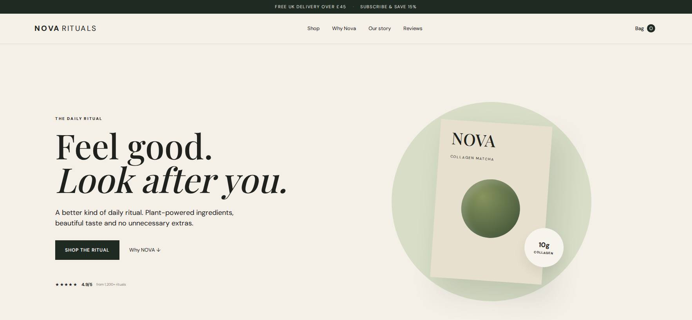

10 · E-COMMERCE / CONSUMER BRAND
Nova Rituals — an e-commerce experience built around product discovery.
A consumer-brand concept focused on a clean storefront, strong product presentation and a friction-light route to purchase.

THE APPROACH
Make product discovery feel effortless.
The concept treats the storefront as a brand experience first and a catalogue second, using clear collections, focused product presentation and straightforward shopping actions.
WHAT WE BUILT- Consumer-brand storefront
- Collection and product hierarchy
- Mobile-first shopping flow
- Clear purchase pathways
HTML / CSSJavaScriptE-commerce UX
Portfolio project. No sales, conversion or customer results are claimed without verified data.